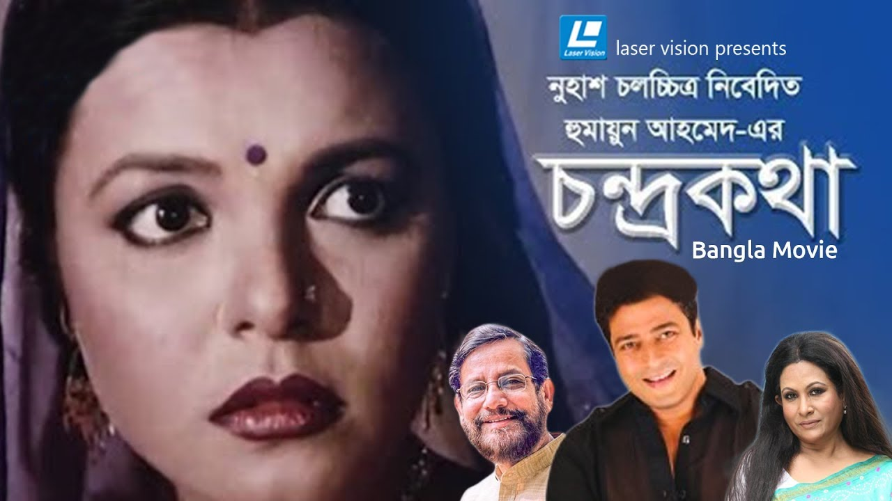
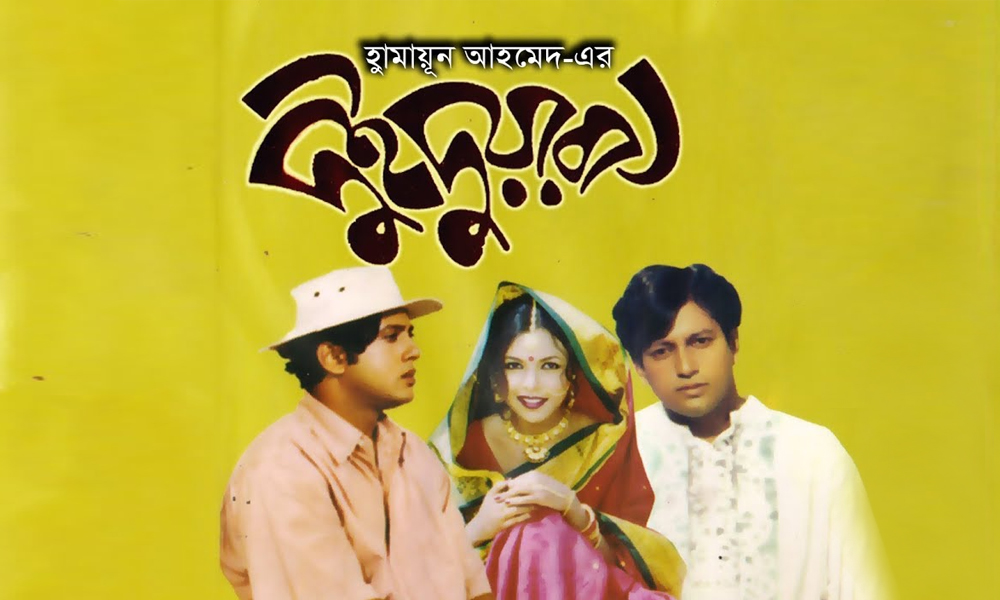
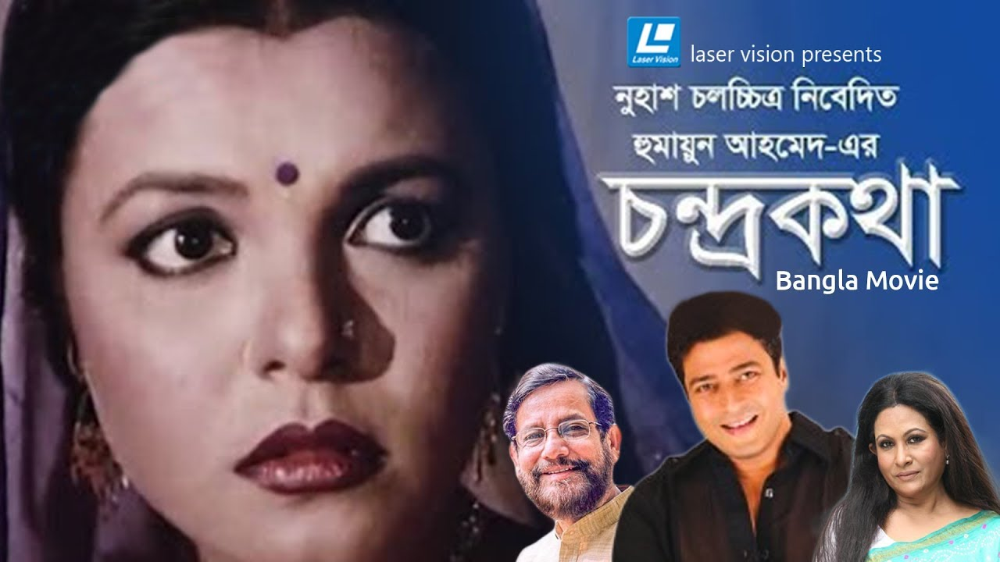
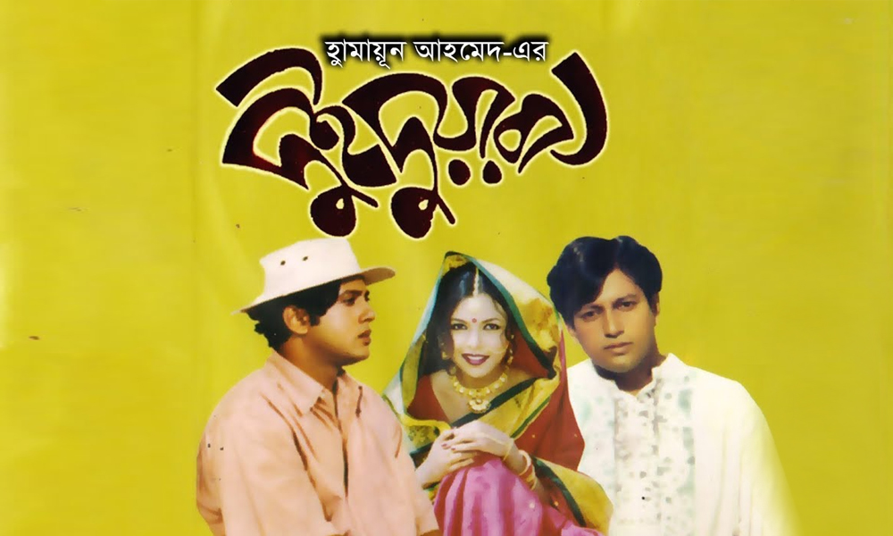

Humayun Ahmed

Mobile:+8801123456789
Email: nuhashchalachitro@gmail.com
(Email & Contact is from his Production House)
(Email & Contact is from his Production House)
Humayun Ahmed ([ɦumaijun aɦmed]; 13 November 1948 – 19 July 2012) was a Bangladeshi novelist, dramatist, screenwriter, filmmaker, songwriter, scholar, and professor. His breakthrough was his debut novel Nondito Noroke published in 1972. He wrote over 200 fiction and non-fiction books, many of which were bestsellers in Bangladesh. His books were the top sellers at the Ekushey Book Fair during the 1990s and 2000s. He won the Bangla Academy Literary Award in 1981 and the Ekushey Padak in 1994 for his contribution to Bengali literature. In the early 1990s, Ahmed emerged as a filmmaker. He went on to make a total of eight films - each based on his own novels. He received six Bangladesh National Film Awards in different categories for the films Daruchini Dip, Aguner Poroshmoni and Ghetuputra Komola. He has his own production company named Nuhash Chalachitra.
 



Humayun Ahmed has his own production company named Nuhash Chalachitra.
He is considered as one of the cornerstones in modern Bengali literature. His works are characterized by non-violence, realistic storyline, family drama and humor styles. His works such Kothao Keu Nei, Aaj Robibar, Srabon Megher Din are still regarded as masterpieces by the critics. He was one of the most influential writers in Bangladesh history for 15 (1990-2005) years where 1 out of 3 films where written by him. Many Bangladeshi film makers are still inspired from his works.His films Shyamol Chhaya and Ghetuputra Komola were gradually submitted for the 78th Academy Awards and 85th Academy Awards in the Best Foreign Language Film category.
Jodi Mon Kade
Sung By Meher Afron Shaon
(Humayun's 2nd Wife)